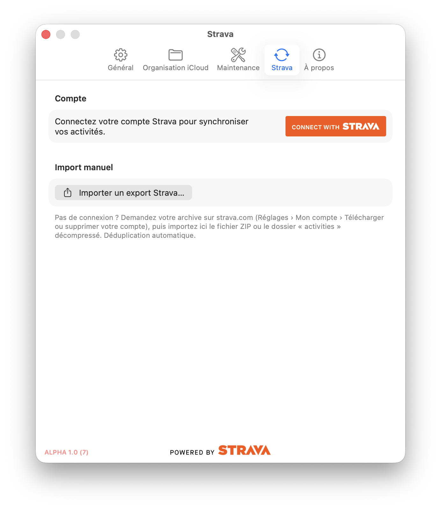
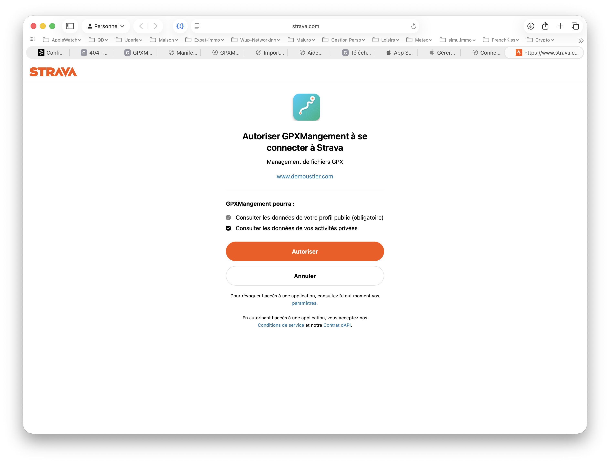
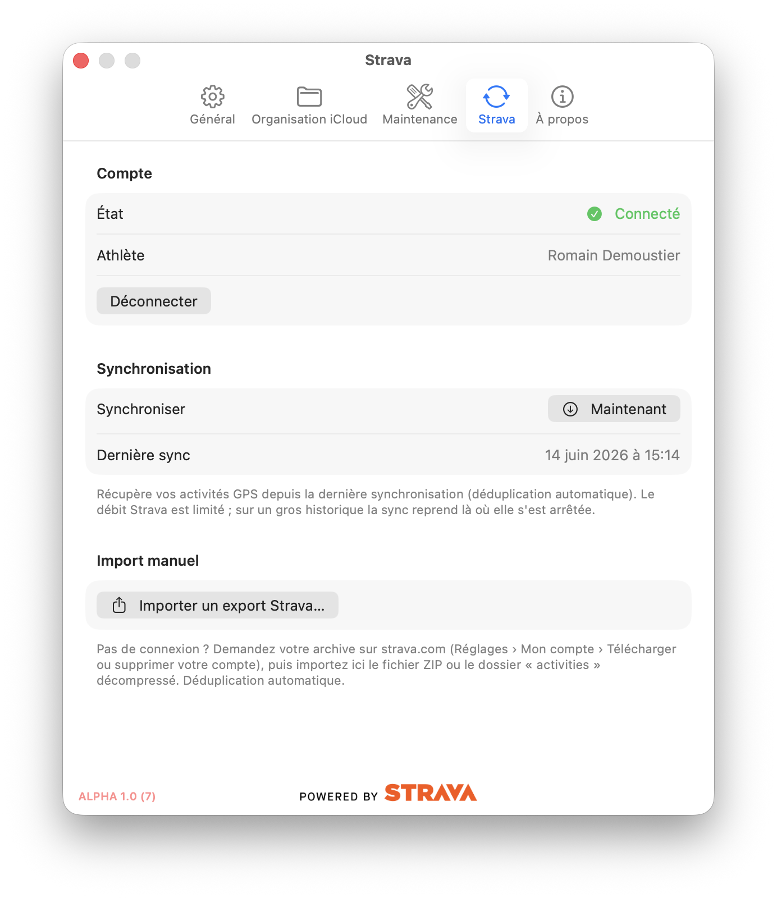

Une fois votre historique importé, reliez votre compte Strava pour récupérer automatiquement vos nouvelles sorties.
Première connexion
Menu GPXManagement ▸ Réglages… (⌘ ,), puis onglet Strava.

📷 Capture à ajouter :aide/strava-sync/img/etape-1.pngVotre navigateur s'ouvre sur la page d'autorisation de Strava. L'app affiche « Autorisation dans le navigateur… » en attendant.
Connectez-vous à Strava si besoin, puis cliquez Autoriser. Laissez cochée l'option « Voir les données de toutes vos activités » — sans elle, la synchronisation ne peut pas récupérer vos sorties.

📷 Capture à ajouter :aide/strava-sync/img/etape-3.pngL'état passe à Connecté et votre nom d'athlète s'affiche. La connexion est mémorisée (jeton stocké dans le trousseau).
Synchroniser
Dans la section Synchronisation, cliquez Synchroniser ▸ Maintenant. GPXManagement récupère vos activités GPS depuis la dernière synchro, avec déduplication automatique (rien n'est importé en double, même si vous aviez déjà l'archive).

📷 Capture à ajouter :aide/strava-sync/img/etape-5.pngLe débit de l'API Strava est limité. Sur un grand nombre d'activités, la synchro peut s'arrêter en cours : relancez simplement Maintenant, elle reprend là où elle s'était arrêtée. La date de dernière synchro et un résumé s'affichent sous le bouton.